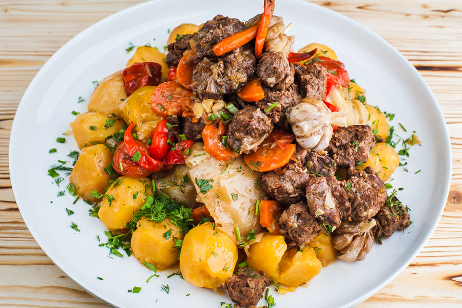

Home
Sirne

Syrne is a traditional Kazakh dish of pan-fried meat and potatoes, often made with lamb or beef.
The meat is first sautéed with onions, then layered with potato wedges and simmered until tender, resulting in a simple and hearty meal.
Ingredients
- Meat (typically lamb or beef)
- Potatoes
- Onions
- Cooking oil
Steps
- Sear the Meat: Heat oil in a heavy pot or skillet and thoroughly brown the pieces of meat on all sides, then add and sauté the sliced onions until softened.
- Simmer the Meat: Add a small amount of water or broth to the pot, season with salt and pepper, cover, and simmer over low heat until the meat is nearly tender.
- Add Potatoes: Place the potato wedges on top of the meat in a single layer, season again, and add bay leaves if using. Do not stir.
- Cook Until Tender: Cover the pot and continue to simmer until the potatoes are fully cooked and have absorbed the meat's juices, about 20-25 minutes. Serve hot.